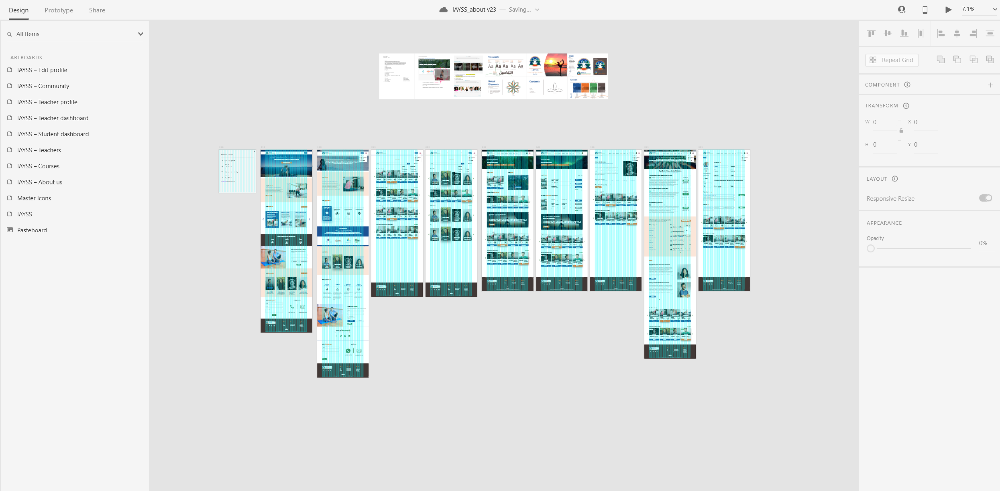

International Academy of Yoga & Sports Science ( IAYSS ) is an online edtech platform with a focus on providing holistic health related online courses. IAYSS helps people to become a certified yoga teacher and provides access to the platform on where they can teach & practice yoga confidently from anywhere in the world.
IAYSS Responsive Web App Design
Team : Akash Raje, Sangram Bhandari
Feb 2021 - Ongoing
User flows
Information Architechture
Wireframing
Interaction Design, UI Design
UI Design
Studies have shown that yoga can decrease the secretion of primary stress hormone, which in turn can improve your overall health.
The aim of the project is to bring awareness about Yoga’s benefits in the current world using an online community platform and help people cope with stress and improve their health holistically.
IAYSS visions to improve Yoga education quality and make it accessible for all, the goal is to provide professional teacher training courses at reasonable cost and provide a platform for yoga teachers where they can teach yoga with their live sessions and manage their Yoga courses.
The challenge was to come up with the user journeys and flows for various tasks e.g. Take a yoga course on IAYSS web app, Join a live class. These tasks had to be done while keeping the budget restrictions and time constraint in mind as the project was in rapid development.
How might we make the process of booking a personal yoga class with a teacher an efficient & enjoyable experience while creating a feeling of personalization.
I started with competitors analysis and usability tests with competitors products that helped me in understanding the ways to design task flow which are relevant to in this context and drafted out rough task flows and eventually moved on to create sitemap to get a clear view of depth of the web app.
Quick sketches of flows enabled me to visualize how the tasks are going to be performed by the students and teachers, following that we decided implement two different user journeys i.e. for yoga teacher & student combined in the same web app rather than creating a separate portal for teachers which was initially decided.
Rough flows for visualization
Now It was time to create wireframes and iterate by conducting the usability tests, then find the problems and come up with the best solutions insprired by the relevant products and how they have tackled the similar sets of problems.
After solving UI issues that were found during tests, the design guidelines were finalized and it was time to jump on UI designing and Interactions.
I designed various screens using adobe XD which I find quite flexible.
• I learned how important it is to approach the design for mobile devices first and sequentially work for bigger screen devices, to avoid difficulties with the responsive design.
• Consistency and standards in design bring familiarity in tasks for the users and making visual style guide for UI is essential before move on to actual design.
• Users perceive an attractive design as more usable and useful, and it is important to balance the form and function while keeping business side of the product in mind.
Due to a Non-Disclosure Agreement with the firm, I wont be able to share more details about the project but I’d be glad to discuss about it offline.
A Product of Dafter Inc.